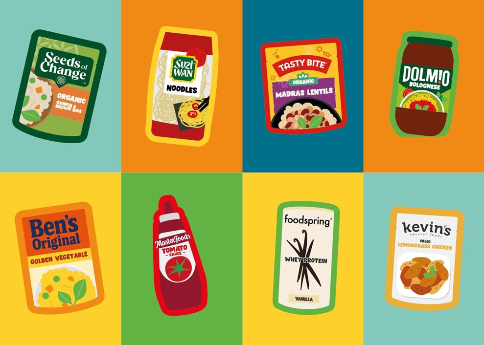

Today, we're listening to consumers
Beef HMR Review Intelligence
Explore written-review performance across the eight specified products. Because in the world we want tomorrow, every product decision starts with clear consumer evidence.
8products in scope
Time series
Monthly review signal
Kevin's average ratingCompetitor benchmarkNov 2025 comparison point
Composition
Rating distribution
Coverage
Source mix
Language signals
Reviews may match more than one topicTopic prevalence
Optional comparison layer
Competitor benchmark detail
Compare like-for-like written-review signals while keeping rating snapshots and incomplete retailer samples clearly separated.
| Brand / product | Pack | Tier | Written reviews | Avg. rating | 1-2 star | Texture | Taste | Evidence |
|---|
Hormel histories are complete public first-party feeds within the date scope. Walmart text is a bounded server-rendered public-page sample; shared Soules 6 oz/14 oz records without a review-level size are excluded. Exact-SKU rating totals are shown separately and never enter dated text metrics.
Market-scale context
Competitor rating snapshots
Point-in-time distributions show scale and rating context; they do not enter trend, topic, or volume calculations.
Retailer audit
Competitor availability by source
Exact product pages, listings, search-only findings, and unresolved gaps are shown separately across the same retailer set.
| Product | Brand | Target | Amazon | Kroger | Walmart | Costco |
|---|
Search-only means a retailer search was identified but an exact public product page was not confirmed. “Not located” is not proof of nationwide absence; assortment can vary by store and date.
Product comparison
Find the products driving the signal
Click any product row to isolate it across the dashboard.
| Product ↕ | Reviews ↕ | Avg. rating ↕ | Pre avg. ↕ | Post avg. ↕ | Change ↕ | 1–2 star ↕ | Texture ↕ | Taste ↕ | Evidence status |
|---|
Pre: Nov 1, 2024–Oct 31, 2025. Post: Nov 1, 2025–Jul 15, 2026. Source, rating, topic, and text filters apply to the comparison; the date-coverage toggle does not redefine these fixed periods.
Product and retailer matching
Where each official product was found
Each of the eight products was first verified on Kevin's owned site, then matched across the six prioritized sources using official barcodes, retailer identifiers, product name, and pack size.
| Product | Brand | Target | Amazon | Kroger | Walmart | Costco |
|---|
Locator results use a Central Illinois reference market and can change by location and time. Costco evidence reflects same-flavor 32 oz club packs and is not blended into exact 16 oz review trends. Amazon shows the Mongolian ASIN linked by Kevin's locator; the second observed ASIN is retained as an alternate catalog record pending parent/child resolution. “Not returned” is not confirmation that a product is nationally absent.
Rating context
Source rating snapshots
Point-in-time first-party and retailer distributions remain separate from dated written-review trends.
Underlying evidence
Review explorer
—
From evidence to action
Recommended investigation sequence
Recommendations are operational next steps, not conclusions about manufacturing cause.
Prioritize Mongolian and Sirloin
Review production changes, supplier and lot records, and sensory results. Evaluate meat and sauce separately.
Use the completed portfolio backfill
Review first-party evidence for all eight products, including the newly covered Peppercorn, Chimichurri, and Sirloin Mushroom items.
Extend retailer diversity
Prioritize authenticated Amazon review-page access and additional exact-SKU retailer histories; retain original retailer attribution when an aggregator exposes the review.
Connect operational evidence
Compare review timing with consumer-care complaints, returns, production lots, supplier changes, promotions, and distribution shifts.
Methodology and data qualityScope, dates, deduplication, coding, and limitations
Only the eight products specified for this review. Chicken products, controls, and Frozen Beef Bolognese are excluded.
638 metric-eligible full-text reviews from Jan 1, 2023 through Jul 22, 2026. The default trend window contains 247 reviews from Nov 1, 2024 onward.
422 full-text reviews were captured from the eight public Kevin's Natural Foods product pages. Reviewer names were not retained.
Exact source-level and same-day cross-source matches on product, rating, title, and review text were removed. The Amazon file declined from 600 raw rows to 60 unique rows across all products.
Transparent keyword rules tag texture, taste, sauce, value, packaging, and “product changed” language. Topic shares are directional.
Full-text public reviews drive trends. Two rating-only entries are retained as context but excluded from KPIs; Costco 32 oz listings remain separate.
The complete public set of 48 written Walmart Honey Garlic reviews is included. Target now contributes 122 written reviews; current rating totals are retained separately from review text.
Thirteen supplied competitor products were normalized after merging duplicate or variant descriptions. Eight are core 14-20 oz comparators; five are adjacent products shown only in the expanded view.
202 dated written reviews meet the product-level quality standard: 132 complete Hormel first-party records and 70 bounded Walmart page records. Ten unresolved shared Soules variant records are retained for auditability but excluded from metrics. Six exact-SKU Kroger rating totals remain context only.
Competitor volume is sample-dependent and must not be read as market share. Rating and topic comparisons use only captured full text; products without defensible review text remain visible as coverage gaps.
Review language identifies where to investigate. It does not establish manufacturing, ingredient, supplier, or formulation causality.
Today, we're turning consumer feedback into focused action. Because in the world we want tomorrow, every food experience earns trust through better listening and better decisions.
